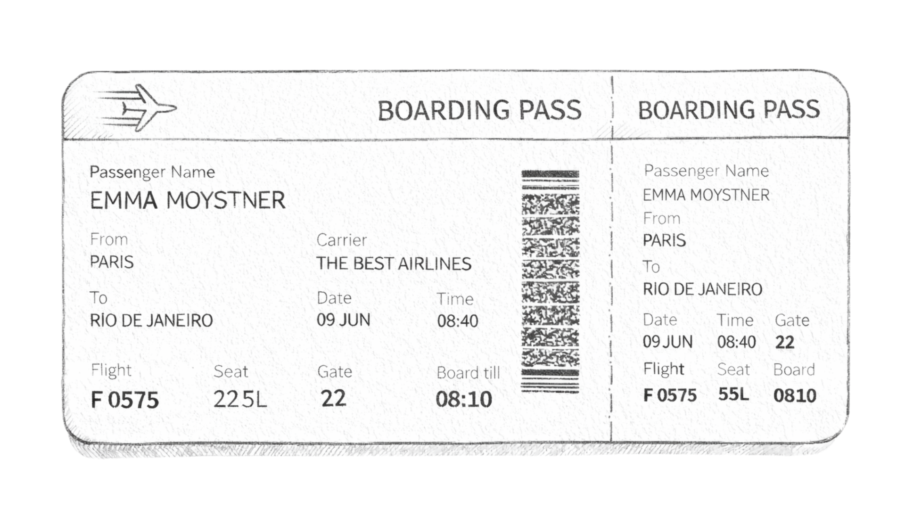
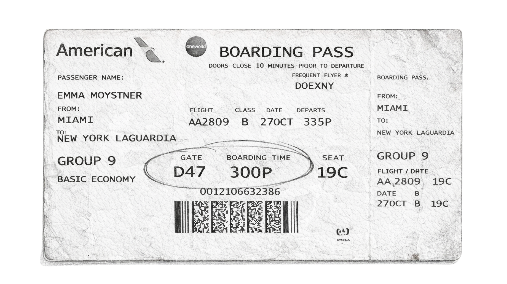
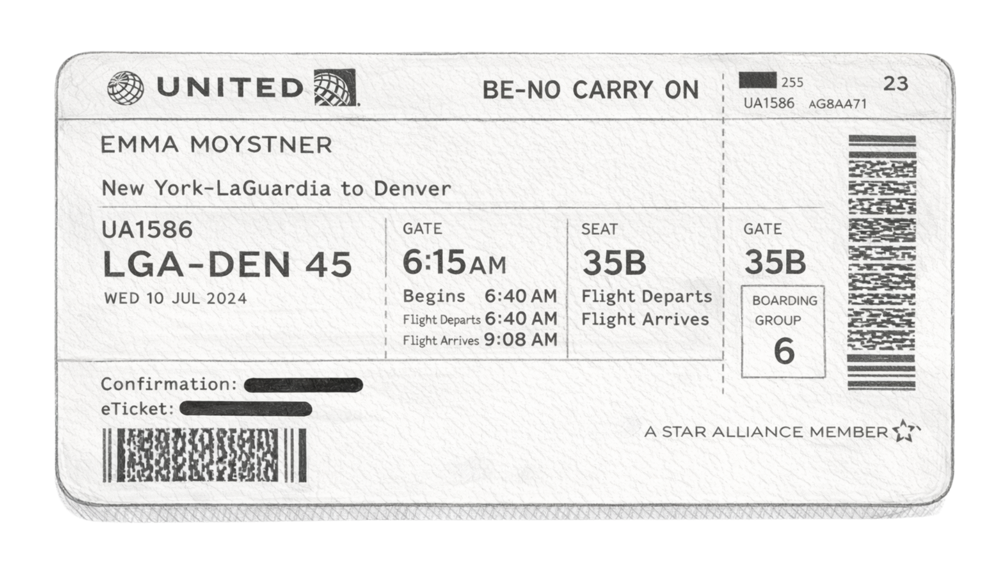
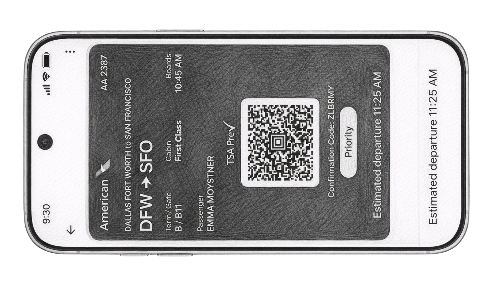
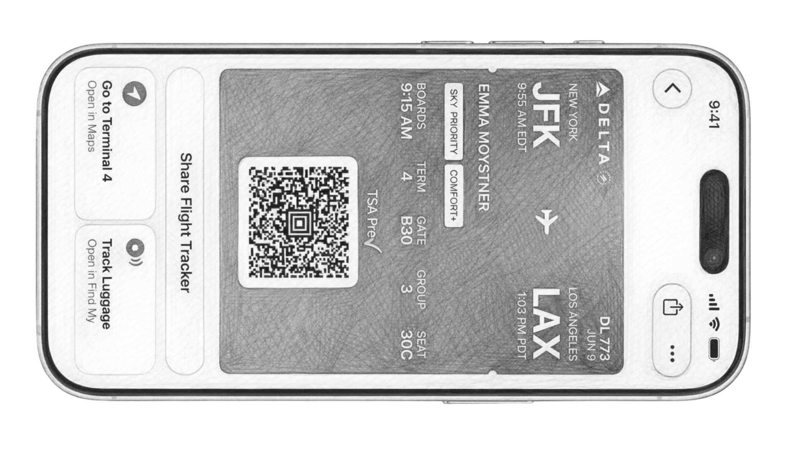

Craft in service of systems. Systems in service of humans.
Emma Moystner — ArtCenter GIXD 2026
The journey doesn't start at the gate. It starts in the system.
00 — Check-in
Before the boarding pass
I didn't start in design. I started in the spaces between people and processes — coordinating the invisible logistics that keep complex systems running. Dispatch timelines. Crew scheduling. The operational reality that passengers never see but always feel.
That work taught me something designers rarely learn first: every elegant experience is downstream of an operational reality.





01 — The Gate
Reading the board
The old model of design leadership is stalled on the tarmac. Pixel pushing. Screen production. Managing designers instead of enabling them. The departures keep getting delayed — or cancelled altogether.
But look at the arrivals. Systems thinking. Ambient computing. Craft and systems as one discipline. A new generation of design leaders isn't waiting for clearance. They're already here.
02 — Takeoff
From coordination to creation
Now I design for the systems I used to navigate. The shift wasn't a departure from that earlier work — it was a climb to altitude, where the full topology of the problem finally becomes visible.
Operations gave me the ground truth. Design gave me the language. The combination is the thing.
03 — Cruising Altitude
The view from thirty thousand feet
Design leadership isn't about managing designers. It's about seeing the system clearly enough to know where craft will have the most impact.
As AI commoditizes production, the designer's role shifts from maker to system-seer: the person who understands not just what to build, but why, and how it fits into the larger architecture of human experience.
04 — Descent
Theory meets ground truth
Airlines in 2036. AI moving from assistive to agentic. Ambient computing replacing screens with spatial awareness. Biometric identity dissolving the friction between security and hospitality.
Five design briefs. Five futures where complex systems serve diverse humans with more intelligence and more grace.
05 — Arrival
"Design the systems people depend on with the craft those people deserve."
— My North Star
EM-01 — The Passenger
Personal Style & Brand Identity
Professional Biography
I'm an interaction designer who thinks in systems and advocates for people. I came to design from project coordination — managing timelines, aligning stakeholders, keeping complex work on track across teams that didn't always speak the same language. I was good at it. But I kept noticing the same thing: the systems I was coordinating were often failing the people they were supposed to serve.
Not because the teams were incompetent, but because nobody was looking at the experience from the human's perspective. Nobody was asking what it felt like to be the patient navigating a confusing discharge process, or the traveler standing in a terminal with no idea what was happening to their flight.
That's what brought me to interaction design. Not a love of pixels or interfaces, but a need to understand — and redesign — the systems that shape how people experience critical moments in their lives.
Strengths & Attributes
Systems instinct
The ability to see how pieces connect, where handoffs break, and who gets left behind.
Empathic pattern recognition
An INFJ's wiring for reading beneath the surface. Less interested in what a screen looks like, more interested in what the person behind it is going through.
Operational fluency
I've lived inside the systems I now design for. I know what dispatch timelines feel like, how crew scheduling breaks down.
Quiet conviction
I lead through clarity and care, not volume.
Personality
INFJ — the pattern-seeker. Drawn to complexity, to meaning, to understanding what's really going on beneath the surface.
I am an interaction designer who operates at the intersection of complex systems and human dignity.
Practice Areas
Aviation & Travel
The full passenger journey from booking to baggage claim.
Katie Dill's trajectory — from hands-on roles at Lyft and Airbnb to VP of Design at Stripe — tells a story the industry needs to hear. She didn't ascend to leadership by abandoning craft for strategy. She built her authority through craft.
Her deep understanding of design at the detail level gave her credibility to operate at the systems level — to shape how design functions across Stripe's entire product ecosystem, to partner meaningfully with engineering and product, and to make the case for design's business value in a language executives respond to.
She doesn't fight for a seat at the table. She earns it by making the work undeniable.
The most effective design leaders aren't choosing between craft and strategy. They're using deep craft knowledge as the lens through which they see strategic opportunities others miss.
Key principle: Craft isn't the opposite of leadership. It's the prerequisite.
Duolingo
Duolingo challenged my assumptions about what 'design-led' means. On the surface: a charming owl and satisfying animations. Underneath: one of the most sophisticated behavioral design systems in the world.
Every element — the streak mechanic, notification timing, social pressure features — is tested, measured, and iterated based on what actually changes behavior. The craft is exquisite, but it's craft in service of a system, not craft for its own sake.
The data is how they center the human — by measuring what actually helps people learn, not what designers assume will help.
Key principle: Data-driven design and human-centered design aren't in tension. The data is the empathy at scale.
Synthesized Principles
Craft is the prerequisite for strategic credibility.
Systems visibility is the designer's most valuable skill.
Data and empathy are the same practice at different scales.
Influence comes from demonstrated value, not positional authority.
The best design decisions are invisible to the user and undeniable to the organization.
EM-03 — Flight Plan
Manifesto
On Business
Design's value isn't aesthetic. It's architectural. The companies that win treat design as a systems discipline — one that creates coherence across complex product ecosystems and translates human insight into business outcomes.
On Design
Design is not screen production. It's the practice of seeing entire systems through the lens of human experience and applying deep craft to the moments that matter most. The industry created a false binary between craft and strategy. The best designers refuse that binary.
On Culture
The best design happens in environments where rigor and psychological safety coexist. Where critique is about the work, not the person. Culture isn't the soft stuff — it's the operating system that determines whether talented people do their best work.
On Leadership
Design leadership is not a title. It's a practice. The designers who thrive in the next era won't be managing teams. They'll be embedded in the complexity of industries — understanding regulatory landscapes, operational constraints, and the lived experience of humans moving through the system.
On Relationships
Cross-functional partnership isn't about handoffs. It's about co-creation. The design leader's role isn't to protect design's territory. It's to be the person who keeps asking: what is the human experiencing right now?
On Responsibility
When you're designing for someone who is sick, scared, exhausted, or stranded, you don't get to 'move fast and break things.' The stakes demand a different rigor — one that combines craft precision with deep empathy.
On Impact
Design leadership should be about service. Service to the humans in the system. Service to the truth of their experience. And service to the possibility that the system could be better — not just more efficient, not just more profitable, but more humane.
On Our Future
AI is commoditizing production. Ambient computing is dissolving screens. Biometric systems are rewriting identity. Every one of these shifts creates design problems that can't be solved at the screen level. They require designers who think in systems and have the courage to raise uncomfortable questions about power, consent, and inclusion.
EM-04 — Route Map
Process & Practice
My 5-Step Process
Read the System — Before designing anything, understand the operational reality. Map the stakeholders, constraints, handoffs, failure points.
Find the Seams — The highest-impact design opportunities live at the seams — where systems hand off, where departments don't talk, where digital and physical diverge.
Frame the Problem — Translate systemic insight into a designable problem. Ambitious enough to matter, scoped enough to execute.
Design with Data and Craft — Build, test, measure. Use behavioral data to validate. Use craft to make the interaction feel worthy of the moment.
Zoom Out, Then Zoom In — Does this intervention create coherence across the broader experience? Then zoom back in and make sure the craft holds.
AI in My Workflow
AI is a production accelerator, not a thinking replacement. I use AI tools for rapid prototyping, copy iteration, layout exploration, and data analysis. The human work — framing problems, reading systems, making judgment calls about human experience — stays human.
Cross-Functional Collaboration
I don't design in isolation and deliver specs. I embed in the complexity of the problem alongside engineering, product, data, and operations.
Industry Domains
Primary
Aviation & Travel
Secondary
Healthcare & Life Sciences
Tertiary
Wellness & Wellbeing
EM-05 — The Crew
Culture & Collaboration
Structuring Design for Humans and Machines
The IC design leader — someone with deep craft expertise and systems vision who influences through quality, not headcount — becomes a critical role. The future team is designers and engineers co-creating inside the same system, with AI accelerating production while humans focus on judgment.
Attracting Talented Teams
Talented designers want meaningful problems with people who take craft seriously. Show people they'll work on problems that matter and they'll show up.
Cross-Functional Collaboration
Katie Dill's approach at Stripe: design runs as a function that creates coherence — built on shared outcomes, not turf wars.
Running Critiques
The question isn't 'does this look good?' It's 'does this serve the human in the system we're designing for?'
Thriving Environments
A thriving design environment is one where rigor and care coexist. The standard is high but the tone is human.
EM-06 — Destination
Contribution to Humanity
Why This Work Matters
The systems I want to design for aren't consumer products optimizing for engagement. They're infrastructure for human life at its most consequential. When someone is stranded in an airport at 2 AM with no information... the design of those systems isn't a UX problem. It's a dignity problem.
Ethical Responsibility
Emerging technologies create design problems that require designers who ask uncomfortable questions. Who gets to put information in your field of vision? Who is excluded when biometrics become the default? The ethical responsibility isn't to slow progress. It's to ensure progress serves everyone.
Long-Term Vision
I'm building toward becoming a design leader who works at the intersection of complex systems and human dignity. I'm not there yet. I'm a career changer with a coordination background and an INFJ's need to understand the patterns beneath the surface. But the combination of systems thinking, craft development, and genuine care is what will close the gap.
"Design the systems people depend on with the craft those people deserve."
Closing Thoughts
What I'm building toward isn't just a career. It's a practice: craft in service of systems, systems in service of humans. That's the operating system I intend to run on.